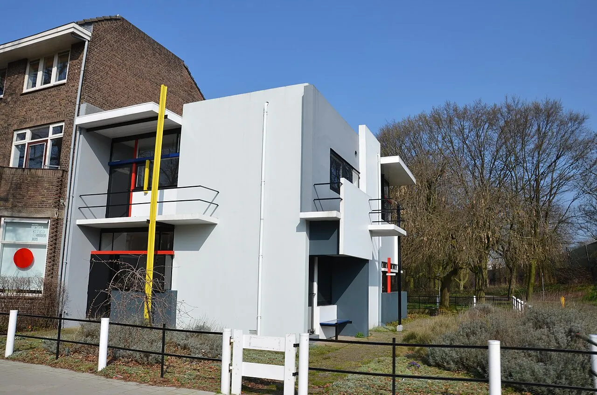
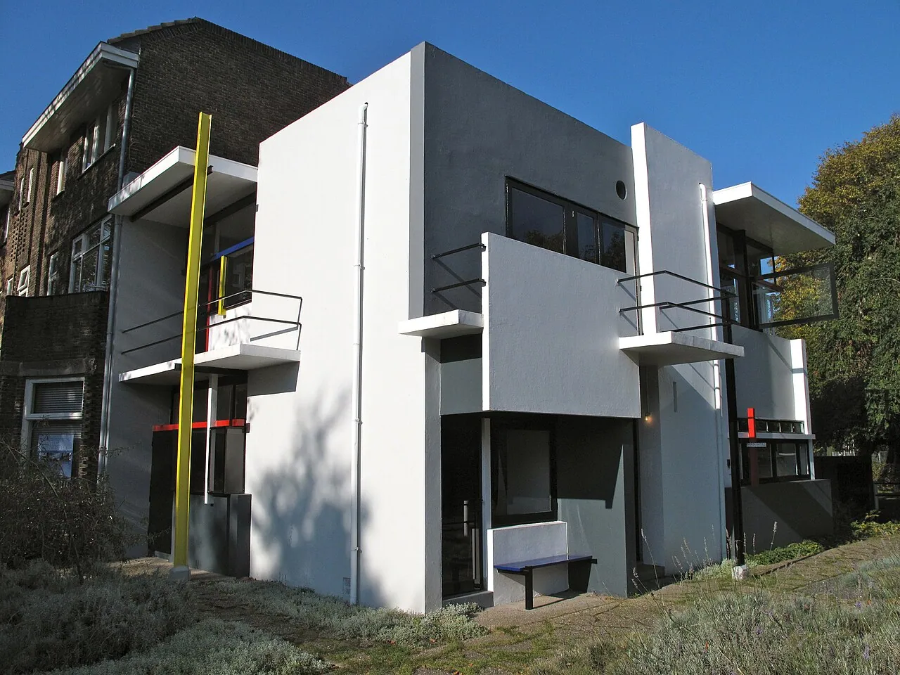
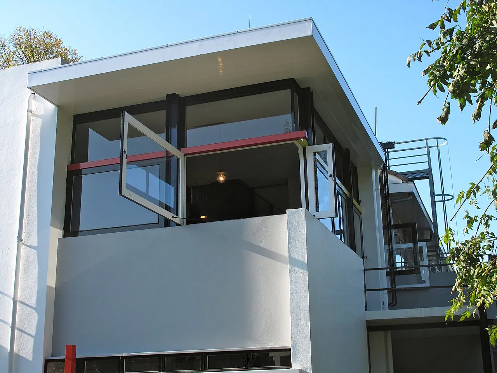
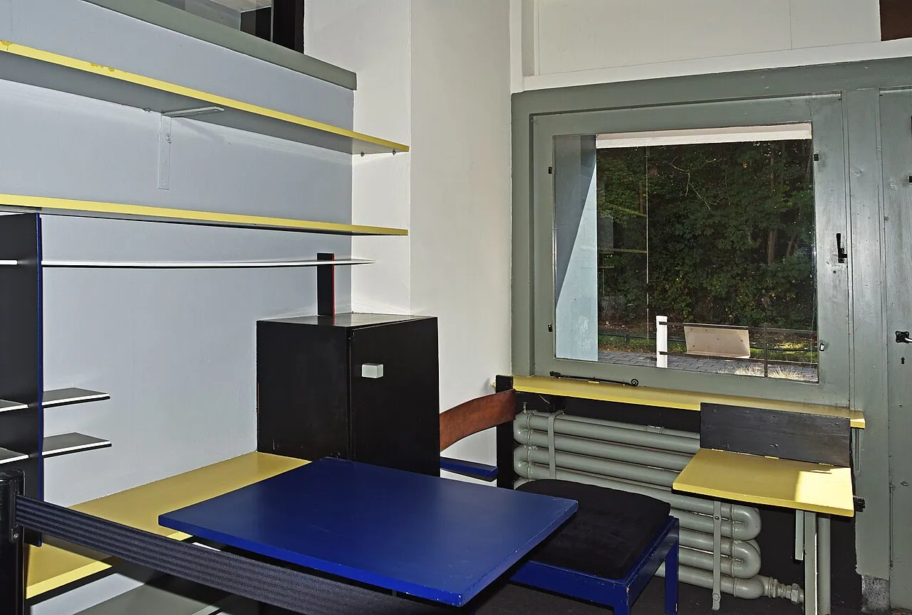
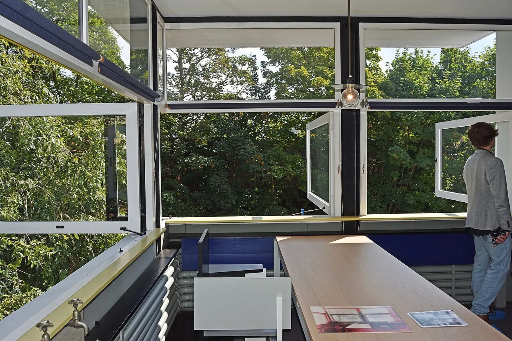
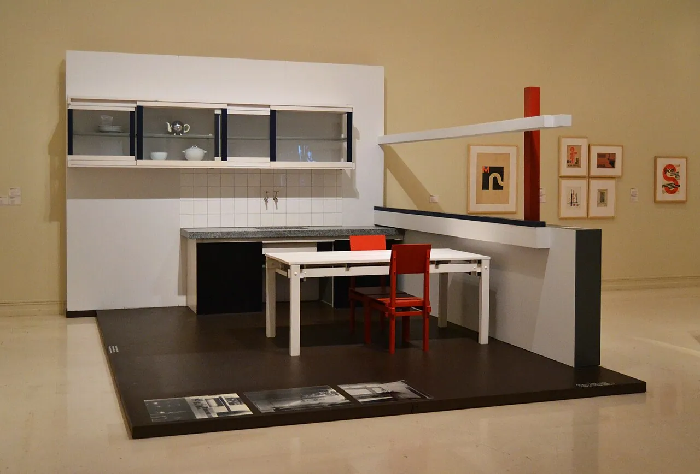

1/8 · Exterior · Het Rietveld Schröderhuis in Utrecht, 2014Photo: Steven Lek · CC BY-SA 4.0 · source
2/8 · ExteriorPhoto: ErikHonig · CC BY-SA 3.0 nl · source
3/8 · ExteriorPhoto: ErikHonig · CC BY-SA 3.0 nl · source
4/8 · Interior · Rietveld Schröder House, Prins Hendriklaan 50, Utrecht, NetherlandsPhoto: Ludvig14 · CC BY-SA 4.0 · source
5/8 · Interior · Rietveld Schröder House, Prins Hendriklaan 50, Utrecht, NetherlandsPhoto: Ludvig14 · CC BY-SA 4.0 · source
6/8 · ModelPhoto: Joanbanjo · CC BY-SA 4.0 · source Photos unavailable7/8Gavin Schafer · CC BY 2.0 · source
Photos unavailable7/8Gavin Schafer · CC BY 2.0 · source Photos unavailable8/8Jchancerel · CC BY-SA 4.0 · source
Photos unavailable8/8Jchancerel · CC BY-SA 4.0 · sourceHouse · Modernism
Rietveld Schröder House
Gerrit Rietveld · Utrecht, Netherlands · 1924
Key featuresDe Stijl in three dimensions: floating planes and sliding partitions.

- Architect
- Gerrit Rietveld
- Place
- Utrecht, Netherlands
See it on the wall